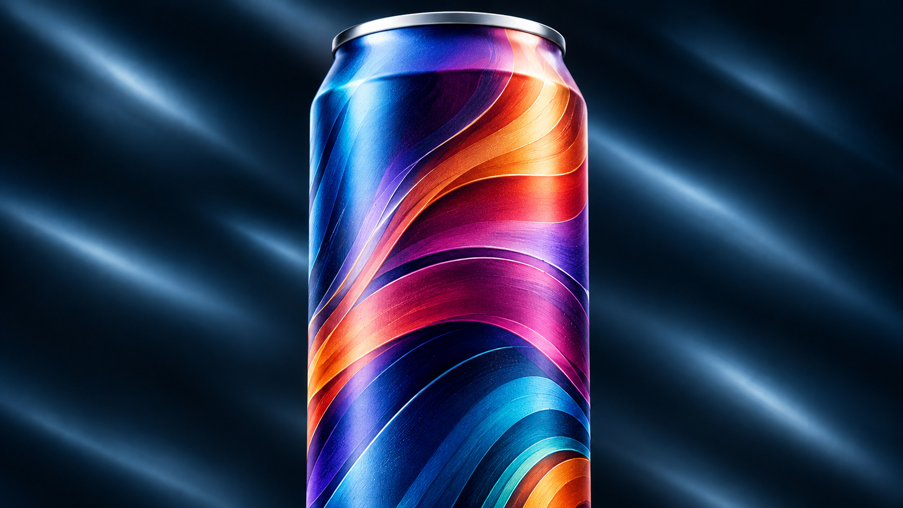

Imagination meets
execution.
The creative freedom of premium packaging, backed by the technical precision and production flexibility to bring it to market.

Extraordinary detail.
Commercially proven.
High-definition digital printing delivers sharp typography, fine detail, rich gradients, and complex artwork with exceptional registration and consistency.
A wider color spectrum.
More brand possibilities.
Our seven-ink process (CMYK + Orange + Light Cyan + Light Magenta) expands achievable warm colors and supports smoother gradients, delicate pastels, and refined tonal detail.
Conceptual visualization only — not a measured ICC gamut comparison.
EXPAND THE POSSIBILITIES
Orange
Dedicated orange expands opportunities for vivid oranges, warm reds, corals, and rich rust tones.
Light Cyan & Light Magenta
Light-density inks help achieve smoother gradients, softer pastels, and more natural tonal transitions.
Designed to be experienced.
Advanced varnish technology creates controlled contrast, depth, and subtle tactile texture. Combine DuraMatte, DuraGloss, selective matte and gloss, and qualified tactile effects for a premium look and feel.
EXPLORE FINISHES →Beauty built for the real world.
From surface preparation to finished can, our process is engineered for adhesion, coating integrity, and production reliability through filling, pasteurization, and distribution.
Built for what's next.
From a 200-can Brand Launch Box to low-MOQ production for pilot runs through multimillion-can programs, Aluminate supports launches, seasonal releases, limited editions, and growing multi-SKU portfolios.
Brand Launch Box
* Variable-data availability depends on qualifying quantities and production requirements. Images are conceptual illustrations.